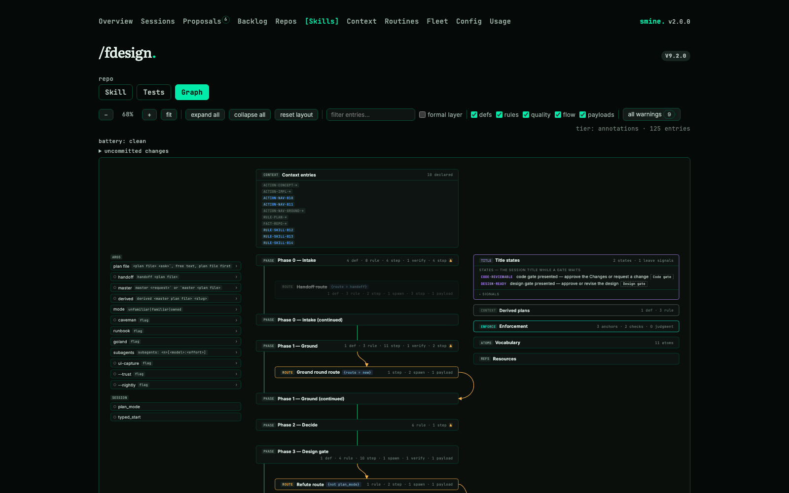

A component system for Claude Code: sixteen installable pieces, each a settings fragment, a hook, daemon or standalone binary, or a file tree, installed into the agent's own configuration by one installer that knows what every piece requires and what degrades without it.
The skills also render for Codex. Each component grew out of necessity while working with modern agents and solves one problem; these pages are the repository's documentation, plain HTML opened from disk.
| Problem | Component | What it does | Page |
|---|---|---|---|
| Endless permission prompts | Never Prompter | A filter behind every tool call, enclosing every permission mode except bypass: what may run is declared once, per settings, skill and plan. Prompts are gone; a denied call names the rule it lacked, so a permission is a one-line edit. Every denial is logged and mined, so the allow list follows use in both directions. | Permission System |
| Untraceable hallucinations | Context Linting | ACDSL, the Agentic Context Domain Specific Linter: prose rules move into checkable gates, and every rule carries its red rate, how often a session broke it while it sat in context, so a rule is sharpened, gated or fired on evidence. | Context Linting |
| Context roulette | Context injection | A read gate denies every touch of a governed file until its guide was read in full; declared context arrives at session start, at skill invocation and after every compaction; a skill declares the entries it needs; lanes and topics cut them into slices; a repo patches in the context it owns. | Context system |
| Broken, unscalable skills | Skill model | A skill is a typed model, <leaf>.cue, and its SKILL.md is rendered from it: a wrong role, a route to nowhere or a version without its changelog row does not render. Z3 answers "can it ever prompt the user?" with unsat and the entry that proves it. Every skill declares a smoke run and an eval; an A/B changes one factor and a blind judge ranks the runs. | Skill model |
| No runtime authority | Heartbeat | One Rust daemon under every session checks a skill's contract call by call: a violation is denied with the way back, repetition ends the run. It knows every fleet member, lands delivered ones by fast-forward, and puts every live session on one page. | Heartbeat |
| Flying blind | Peek and ccusage | Any session's turns, plan, diff and status are read from its transcript; a status call returns bounded counters cheap enough to poll; ccusage figures sit beside the window that is left; a skill's run is priced before it starts. | Peek |
| Memory that rots | Smining | The nightly retrospective: every idle session becomes one typed record, an auto-memory dir is drained into linted context, records become problems and problems become skill or routine changes, each one commit that picks alone onto main and waits on a page where you say yes or no. | Smining |
| Worktree sprawl | Agentwt | Will it merge, and is it merged? One Rust tool on gix answers both for every worktree: branch, base, what is unlanded, whether it merges clean, and the order that lands without a conflict. | Agentwt |
| Steal my smine | Components | Sixteen pieces, Minimal or Full or à la carte, every step shown before it runs; make skill-bundle writes every skill that needs no smine program as a standalone bundle. Nothing needs more than it declares. | Install |

Minimal, Full, or à la carte, every step shown before it runs. On macOS, smine-<version>-darwin-<arch>.tar.gz from the latest release carries the source tree and every binary: extract it, clear the download quarantine once (xattr -dr com.apple.quarantine smine, the binaries are unsigned) and run smine/bin/installer, no Go or Rust needed. On Windows, smine-setup.exe from the same page carries every binary. ./install.sh builds from source and is for development. Ports, profiles and unattended installs: Install.
Frontier is expensive, automation breeds automation, and the token bill follows.
Thanks to Microsoft Research for Z3, and to my formal systems professor, the late Prof. Dr. rer. nat. habil. Steffen Hölldobler, for his work in computational logic and automated reasoning.
| Path | Contents |
|---|---|
| skills/<group>/<leaf>/ | One skill: <leaf>.cue is the model, payloads/ the templates. Skills directory. |
| context/ | The agent context: actions/, rules/, facts/, the AGENTS.md template. |
| acdsl/ | The machine-verified rule corpus and its fixtures. |
| settings/claude_code/ | The settings template, one fragment per component; gate.json is the allow list. |
| cmd/, internal/ | The Go hook binaries and tools, the Rust crates heartbeat and agentwt. |
| routines/, evals/, sessions/ | Scheduled jobs, eval records, mined session records. |
| docs/ | These pages. |
PolyForm Noncommercial 1.0.0 licensed; see LICENSE.